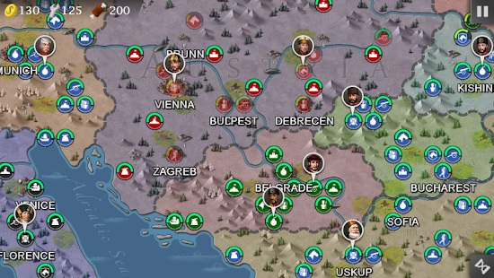
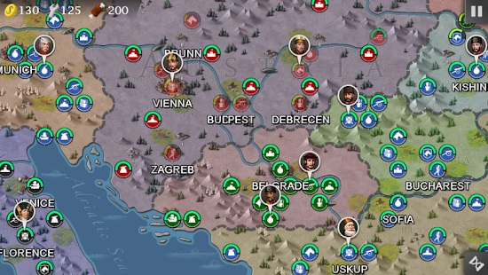

Eastern Overlord (1798-1820)
- Battle of Embabeh
- Territorial Dispute
- Retaking Lost Ground
- Finnish War
- Anglo-Turkish War
- Rebellion
- Patriotic War
- Scorched Earth
- Ruins
- Russo-Turkish War
- The Collapse of Russia*
- The Collapse of Turkey*
- Imperial Expansion
Assign a general to the battleship at Izmir, heavy cavalry, light cavalry, siege artillery & light artillery. Move your ships just before the French ships. Let the British warships fight with the French first, then you join the fight. Use flanking to destroy them. Move all your units along the right side of the map. Your light cavalry & light infantry should take the stable as early as possible. Flank for maximum effect. By the time your siege artillery & heavy cavalry arrive at the stable, you should be able to take the factory. Flank and take Cairo by killing Lannes, build a heavy artillery from the factory next to Cairo if you can. To flank Brueys sitting in the Alexandria port, move a land unit next to it then flank it with the privateer while your frigate and battleship fire on it.
Assign generals to the double grenadier, double light cavalry, double light artillery. This force will rush towards Ekaterinodar via the top of the map, avoid the firing range of the enemy frigate. Do not stop to destroy the forts along the way. Assign a general to the heavy artillery. Together with Kutuzov and Wittgenstein, this force will take Sevastopol by crossing the river. The lone light infantry at Kishinev will stay in the city until the end of the campaign. Do not leave as the Turks will attempt to take your position by mid-game. Move the line infantry down towards Kishinev to help out. If you get surrounded, build a rocket artillery to rain shells on the Turks while holding your defensive line. The British ships will help you by bombarding Sevastopol. Thankfully, they will also engage the French ships as well as to stop the enemy from landing on your port. Your privateer should just sit in port to defend it.
Use the cavalry general to take out the coastal fort near Tunisia. Once you take Tunisia, the French cavalry general will attack you so surround him and attack with artillery. Always attack with artillery because they don't get hit back and at lower health, the enemy will deal less damage to your cavalry/infantry units. After killing the French cavalry, take Kairouan. If you have Sophia, you can attack the fort there. Then send all of your generals west and attack Algiers. Focus your artillery on the enemy cavalry general first, then take the city. The enemy is weak and will only spawn weak infantry. At this point (round 10) your army will lose moral but it's ok. After you take the city, rush to the final objective. Ignore the infantry general there and just attack the city and take it.
Assign Kate to one battleship, move it to bombard Turku's defender with the other two ships. Stay clear of the Swedish heavy arty. Move the other frigate up to join the other three ships you have up north. Once the 4 ships have greatly weakened the Turku's defender, move west quickly to clear Cronstedt, the coastal gun and the other ships for your land force to land. Split your troops into two. Grenadier and light cavalry to take the factory east of Turku before taking Turku and clearing the heavy artillery. Once Turku is secured, move east and land on Stockholm to help kill Dobeln. Light artillery and heavy artillery will cross the sea under the protection of Kate and the other ships. You may fire on the enemy ships, but do not be at the front of the fleet. Land around the trench then take the stable then move east towards Orebro to hit Dobeln. The Swedish and British will attempt to rush your position. Send a grenadier to hold Stockholm while your two artilleries move north then down to bypass the rushing Swedish and British troops. Dobeln will be sitting alone in the stable without protection. Your second wave of reinforcement from Turku should be sufficient to hold the line against the rushing Swedish and British while your two arty bombard Dobeln. Kate and the 3 other ships should move south towards Karlskrona port once your first wave of 2 artilleries landed. You can still keep 1-2 smaller ships to help bombard Stockholm. But Kate and another ship should head south to ensure that your French allies are not overran by the British and Swedish. While all the above are ongoing, the French ships will escort their landing forces to land at Karlskrona. They will have some success initially, but they will soon be overwhelmed by five British ships and Swedish land forces. Hence, it is vital for Kate to move south quickly to ensure the success.
Assign Kate to the battleship at Izmir. Team up with the other ships to sink Duckworth. The French will keep the British busy. Assign a general to the light artillery near Izmir. Use the heavy cavalry and coastal fort to block the British from landing. Move all other troops around Istanbul east to take out the Russians. Move all troops around Athens to help the French troops. Let the French fight the British for around 3 rounds before you join in.
Assign Kate to the battleship, hover around the coastal fort for protection until the frigate arrived from the south. Flank the enemy ships and sink them, then move all the way up to bombard the Russian factory, city and stable to weaken them. Assign generals to the guard cavalry and the double heavy artillery, then move up along the coast together with Kate providing cover. This force will take the Russian objective then swing left towards Lasi. Lasi will be attacked from both sides, so they might fall into enemy hands. Assign generals to the siege artillery and the heavy cavalry. Milinovic will attack Clujnapoca and Bucharest, send your heavy cavalry to help defend Bucharest. Your guards cavalry and heavy artillery can also help out on their way to the Russian objective. The enemy will try to occupy Sofia, make sure you upgrade and defend it. Pasha and the siege artillery will be busy fighting Dobrnjac. Once Sofia is secure, send the machine gun and the heavy cavalry left to help capture Belgrade.
Move the line infantry and heavy artillery from Vilnius to hide behind Kutuzov's large fortress. Move the guards and light cavalry from Minsk to defend the chokepoint between the two rivers. Let the fortress take the first waves of attack from Lefbvre and Ney. Wait for Kutuzov to fire back on the attackers injuring them in the process. Kutuzov will be able to take at least two to three waves of attack. When the attackers are greatly weakened, used the line infantry and heavy artillery to mop up them. Take care not to get flanked by Ney. Always use the line infantry to defend your heavy artillery. Use the light cavalry to get into flanking position, then use the heavy artillery and Kutuzov's fort to the maximum effect. You can also use the guards and line infantry to surround the enemy. Always fight within the 2 hex radius of Kutuzov's fortress for support. Once Lefbvre and Ney are gone, cross the bridge, ignore the level 2 fortress, take Plock, then make or park an artillery on the farm to fire on Murat. Yorck and Blucher might harass you, if that happens, build some cheap infantries to keep them occupied. Move Sacken, heavy cavalry and light artillery to hide behind the small fortress. Move south, kill the grenadier and light cavalry, avoid the firing radius of the large fortress, flank Dombrowski and kill him. Head straight west then up towards Krakow. Skip the large French fortress and Warsaw. Davout will chase you, kill him and join with your other army south of Plock.
Leave Moscow to the French and concentrate your defense at Tver and Ryazan (north and south of Moscow). Davout will just sitting in Moscow so you can just ignore him. Napoleon will just stay near Moscow and you can ignore him for now. At Tver, Lefebvre will come together with Murat that make defending this front more difficult but you can utilize the fort and attack them with artillery. Defending Ryazan in the south is a bit easier because Gouvion, Ney, and Berthier will come one at a time so you can focus kill one by one. You can ignore other French units if they are not making trouble so you can save your troops for attacking generals. Once you kill Lefebvre and Murat at Tver and Gouvion, Ney, and Berthier at Ryazan you can make a pincer attack on Napoleon. Napoleon will probably just sit bunker so artillery would not work well against him. So use either infantries or cavalries to surround him and gradually rip him off.
Attack france from 4 directions: for Northern group, assign generals to guards, heavy cavalry & light artillery. Advance past Vilnius, ignore the large fortress, move quickly to Warsaw then Poznan. Alexander group will advance towards Minsk, hit Ney then head towards Warsaw then Poznan. Barclay group to assign a general to the heavy cavalry, then cross the river towards Minsk, Ney then Warsaw. Might need to help out at Lublin. Kiev group will hug the southern wall, go past Lubin, Krakow then to Poznan.
Golitsyn and other generals will take Iasi, then link up with the heavy artillery and Wittgenstein's forces at Kishinev before heading down to Clujnapoca. You will need to help out your ally around Debrecen. Once you mop up, move down to Uskup before swinging east towards Plovdiv then Istanbul. Wittgenstein's forces will have to cross the river then head for Kishinev, then Bucharest. Take care to avoid the coastal gun and large fortress. The final target will be Istanbul. Make sure you team up with your naval forces at Istanbul. Sevastopol's force will take the long slow trip on land west towards Kishinev then down south to Burcharest then Sofia. Assign Kate to your battleship, team with Senyavin to isolate as many ships as possible then sink them by flanking. Move whatever ships that are heavily damaged to repair at your port near Sevastopol. The other port is too far away. Towards the very end, when your land forces take the factory and stable beside Istanbul, clear a path for your battleship to take up position south east of Istanbul for the flanking bonus. Ignore all other Turkish forces with Dobrnjac. Do keep two ships to prevent them from crossing the sea to land at Sevastopol.
Everyone head towards Wittgenstein first, kill him, conquer the trading city and stable. At this point, you can decide if you want to go straight for the other three main objectives and ignore the rest. Split your troops into 3 separate groups: 1) Light cavalry and heavy cavalry will branch off to conquer Kiev then kill off Zakrevsky before going for Platov. This force got a long way to go, hence it has to be the most mobile with two cavalry generals. 2) Light Artillery, guards cavalry, heavy arty will punch deep past Kaluga and Smolensk. You will kill Barclay and Bennigsen. Platov might join in the fun and you can kill him too. This will be your main force. Hover around the fence tile and bombard the large fortress while waiting for your Kiev attack force to catch up. 3) Your rocket arty and grenadier will move slowly without generals. Pasha is a slow snail too. Have all these head for Ryazan from the first turn. Once Ryazan is conquered, stay back and bombard Moscow across the river. Do not get into range of the heavy arty or large fortress. Once your Kiev force join with your main force near the fence, Alexander would be greatly weakened from all the bombarding. If Golitsyn gets nosy, kill him too. Kiev force will move up to St Peterburg, flank and kill Yermolov. After he is dead, you can mop up all the remaining enemies around the area. The main force will continue to bombard Moscow. Use Sophia to smash the large fortress to clear a direct route into Moscow.
Assign generals to guards cavalry, triple grenadiers & light artillery near Sofia. Head down to Uskup, then to Athens. After clearing Athens, sail east to hit Izmir. Assign Kate to the battleship, bombard Bursa to weaken the defenders for Platov and the siege artillery to take. Kate will sail south to Izmir to help Sofia's troops to occupy Izmir. Platov should not venture too far from Bursa after taking it. Just hover around Bursa and spam double grenadiers to overwhelm Eskisehir. Bennigsen, the heavy artillery & triple grenadiers should land quickly, then go straight for Caradja. Leave the large fortress alone as it cannot chase you. Take Ankara and the stable before leaving them empty to attack Konya. This is to prevent the enemy from spamming troops behind your force to occupy the port. Stay clear of the enemy heavy artillery and rocket artillery. If the rocket artillery chases after you, get close to it and flank to destroy it. Concentrate your forces to kill Pasha to win.
Have an infantry general (Picton) team up with Alexander and Golitsyn & Yermolov to face incoming Prussians in the North. After killing several of them, those four make a push for Warsaw and defend it for the rest of the mission. Yermolov and Golitsyn started heading through northern Austria to rendevouz with the southern force at Vienna. So while this happened in the North, the southern generals (Sophia, Kate, and Fatimah) attacked all the cities directly in front. After capturing Debrecen they held the position there as all of the Austrian generals came for them. While Yermolov was capturing Northern cities, the southern force captured everything on the way to Vienna. After taking Vienna everybody charges at Berlin and captures it.


 
